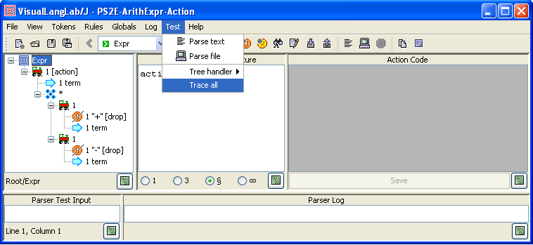
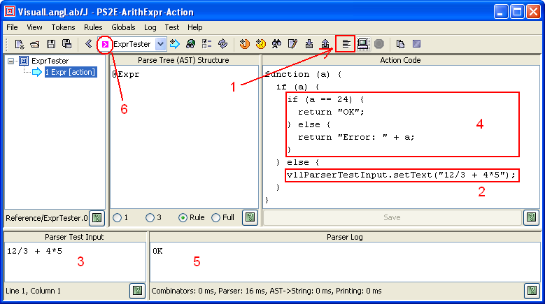

VisualLangLab - Testing Parsers
For Ver-10.10 or higher only!
If you are using an older version, follow
this tutorial instead.
Beginning Ver-10.01, the title bar of the About VisualLangLab
dialog box displays the version number.
The latest jar file can be downloaded here:
VLL4J.jar.
|
The greatest advantage of VisualLangLab
over other tools is ease of testing.
Every other parser development tool requires
a quite complex code-generation step that must be completed without
errors before the parser can be run for testing.
But the grammar-trees in VisualLangLab are executable --
meaning they can be run directly without any code-generation or
other manual activity.
Running a Parser
There are two ways of running a VisualLangLab parser as described below.
Within the IDE
The IDE's testing facilities are built on top of a framework that can
create a parser from the currently loaded grammar and run it at the click
of a button as described under
Validation is Easy as A-B-C below.
To run the current grammar, use the toolbar's dropdown list to select the
top-level grammar-tree, and click the Parse text button as described
in greater detail under Validation is Easy as A-B-C.
Text input for the parser can be typed directly into the IDE, or obtained from a
user-designated file as described under
Getting Test Input from Files below.
The Command-Line Runner
VisualLangLab has a command-line runner that can create a parser from
a saved grammar file, and run it to process user-provided input data as illustrated below.
> java -cp VLL4J.jar net.java.vll.vll4j.VLL4J ArithExprAction.vll Expr "2 + 3"
5.0
The class net.java.vll.vll4j.VLL4J is the command-line runner, and the "5"
on the next line is the AST (the parser's output). The arguments
to the command are described in the following table.
| Argument |
Description |
| "-a" (optional) |
do not print AST (default: print AST) |
| grammar_file |
the *.vll file from VisualLangLab GUI |
| parser_name (optional) |
the top-level parser-name (default: Main) |
| data/file |
literal data or file-name for parser input |
In the example shown above, ArithExprAction.vll is the grammar_file, Expr
is the parser_name, "2 + 3" is the literal data, and the option "-a" has not been used
(as we want to see the result printed). The file ArithExprAction.vll is obtained
by invoking Help -> Sample grammars -> PS2E-ArithExpr-Action from the VisualLangLab
main-menu, then invoking File -> Save As, entering ArithExprAction.vll
into the file-chooser presented and clicking the Save button.
Validation is Easy as A-B-C
Since the grammar-tree is executable, validation is just
three simple steps:
- Enter test input in the Parser Test Input area (as at "A"
in Figure-1 below)
- Click the Parse input button (at "B" in Figure-1),
or select Test -> Parse input from the main menu
- Verify that the parser's output (at "C") is correct
If you need help in understanding how to interpret the output go to
AST and Action Code

Figure-1. Three simple steps to validation
The approach shown above is tedious as it requires manual verification
of potentially complex data-structures. So while several approaches to
test automation will be described below, note that manual testing is
very useful during prototyping or active development --
particularly to support an iterative, incremental process.
Divide and Conquer
Clicking the Parse input button runs just the displayed grammar-tree.
This behavior lets you validate independent parts of a large parser
separately, simplifying and speeding up development of large and complex parsers.
However, if a grammar-tree contains any Reference nodes,
execution will spill over to the other referred nodes.
This is essential behavior, being the mechanism by which large parsers
are built up from smaller parser-rules. There are a few important points to be
remembered from this insight:
- Parsers should be divided into logically separate parts, with each
part being a grammar-tree (or a tree of grammar-trees)
- While recursion and mutual recursion can lead to elegant solutions,
they are often difficult to test, and should be avoided if possible
- When testing a complete parser, make sure that the top-level parser-rule
(or grammar-tree) is selected
Forgetting the last point above is a souce of much confusion during testing
of parsers. The ComboBox for selection of parser-rules lists their names
alphabetically, so the grammar-tree displayed immediately after a new file
is loaded is not necessarily the top-level parser-rule. To alleviate this problem,
the top-level parser-rule should be given a name with an intial capital letter.
If all the other parser-rules have names beginning with lower-case
letters, the top-level parser-rule will always be at the top of the list
in the ComboBox, and be the first to display when the containing file is opened.
This convention is used in all the built-in Sample Grammars.
Input for testing can also be obtained from a file instead of the
Parser Test Input area. To provide input from a file,
you should click the Parse file button
 (next to the Parse input button).
When the Parse file button is clicked a file-chooser dialog
is presented. Selecting a file and clicking the file-chooser's
Open button causes the parser to process input text from
the file.
(next to the Parse input button).
When the Parse file button is clicked a file-chooser dialog
is presented. Selecting a file and clicking the file-chooser's
Open button causes the parser to process input text from
the file.
If a directory is selected in the file-chooser dialog,
the grammar-tree is run on each of the files found in
the directory tree rooted at the selected directory.
Terminating a Long Running Test
While a parser is being run the Stop parsing button
 is enabled. This is not noticeable during a typical test as the
run ends very quickly, and the button returns to its usual
disabled state. However, a test run that appears to be running
for too long can be terminated by clicking this button.
is enabled. This is not noticeable during a typical test as the
run ends very quickly, and the button returns to its usual
disabled state. However, a test run that appears to be running
for too long can be terminated by clicking this button.
Trace and Trace-All
If you need to know which parser-rules are being fired and why,
you can enable tracing for any grammar-tree node
(see the annotations section of
Editing the Grammar Tree.html).
Another useful feature is to enable trace all as in Figure-2
below. When trace all is enabled, all parser-rule root nodes are traced.

Figure-2. Enabling trace-all
Automated Testing
A variety of approaches to automated testing are possible.
The right choice for any particular parser should depend on
complexity, size, frequency of regression tests, etc.
Wrapper with Action-Code
Prerequisite: You should read about
Action Code Design first
This simple yet highly effective approach uses an additional
parser-rule to wrap before and after test-code around the
grammar under test. Figure-3 below illustrates the technique being used
to test the built-in PS2E-ArithExpr-Action grammar.
The grammar-tree shown (ExprTester) is the additional wrapper
created only for testing (it exists in the bundled sample grammar).
Given it's limited purpose, it merely invokes
Expr (the top-level parser-rule of the parser under test) using a
Reference node. It also
uses a Javascript function as action-code to wrap testing logic around the
invocation of Expr. The action-code shown in the figure is only
visible when the Reference node is selected.

Figure-3. Wrapper with action-code for testing
Clicking the Parser input button (1) invokes ExprTester, which in
turn triggers the following series of actions:
- the before (or setup) code block (2) is run. This causes the input for the test (3)
to be placed in the Parser Test Input area (see
Predefined Variables
for more details)
- the parser under test (Expr) is invoked, which parses the input provided in
the preceding step
- finally, the after (or test) code block (4) is run. This part validates the
AST produced by Expr, and prints out a suitable message (5)
The result of the test (OK in this case) can be seen at (5) in the
Parser Log area. You can modify the parser input in the script and simulate
a failure. This is a simple example, but the technique can be
extended to run an exhaustive set of tests as well.
Starting version 10.21, parser-rules designed for testing with this technique are
automatically distinguished with a special icon in the toolbar's dropdown list
(see "6" in the figure).
Using JUnit and the VisualLangLab API
Not updated for Ver-10.10 yet!
|
The following code is a standalone JUnit test (in Scala) to validate the
ArithExpr parser.
Before running the test the grammar file must be written out to an XML file
by invoking File -> SaveAs from the main menu, and entering ArithExpr.vll
(the name used in the code) into the SaveAs dialog box.
Information on using the VisualLangLab API in client programs can be found in
Using the API.
import java.io.File
import org.junit.Before
import org.junit.Test
import org.junit.Assert._
import org.junit.runner.JUnitCore
import scala.util.parsing.input.CharSequenceReader
import vll.core.VllParsers
import scala.collection.JavaConversions._
class ApiJUnitTest01 {
def areSameAST(a: Any, b: Any): Boolean = (a, b) match {
case (aa: Array[_], bb: Array[_]) => aa.length == bb.length &&
aa.zip(bb).forall(p => areSameAST(p._1, p._2))
case (aa: List[_], bb: List[_]) => aa.length == bb.length &&
aa.zip(bb).forall(p => areSameAST(p._1, p._2))
case (None, None) => true
case (aa: Some[_], bb: Some[_]) => areSameAST(aa.get, bb.get)
case (aa: Pair[_,_], bb: Pair[_,_]) => areSameAST(aa._1, bb._1) && areSameAST(aa._2, bb._2)
case (_, _) => a == b
}
var parser: VllParsers#Parser[_] = null
def parse(s: String) = {
val pr = parser(new CharSequenceReader(s))
if (pr.successful)
pr.get
else
throw new Exception("Parser failure")
}
@Before def setUp() {
val vll = VllParsers.fromFile(new File("./ArithExpr.vll"))
parser = vll.phrase(vll.getParserFor("Expr"))
}
@Test def addition() {
val parseResult = parse("33 + 55")
val expectedValue = Array(Array(Pair(0, "33"), Nil), List(Pair(0, Array(Pair(0, "55"), Nil))))
assertTrue(areSameAST(parseResult, expectedValue))
}
@Test def subtraction() {
val parseResult = parse("63 - 21")
val expectedValue = Array(Array(Pair(0, "63"), Nil), List(Pair(1, Array(Pair(0, "21"), Nil))))
assertTrue(areSameAST(parseResult, expectedValue))
}
@Test def multiplication() {
val parseResult = parse("11 * 12")
val expectedValue = Array(Array(Pair(0, "11"), List(Pair(0, Pair(0, "12")))), Nil)
assertTrue(areSameAST(parseResult, expectedValue))
}
@Test def division() {
val parseResult = parse("132 / 11")
val expectedValue = Array(Array(Pair(0, "132"), List(Pair(1, Pair(0, "11")))), Nil)
assertTrue(areSameAST(parseResult, expectedValue))
}
}
object ApiJUnitTest01 {
def main(args: Array[String]) {
val res = JUnitCore.runClasses(classOf[ApiJUnitTest01])
println(res.getFailureCount)
res.getFailures.foreach(println)
}
}
JUnit tests are best run on grammars without embedded action-code.
The Scala and Javascript interpreters have concurrency behaviors
that are not handled correctly by the current version of VisualLangLab
when used with JUnit tests.
JUnit tests can be written in Java as well, if awkward syntax is acceptable.
However, this is best left to users with a knowledge of how
Scala names and types (particularly those in the package
scala.util.parsing.combinator map to names in Java.
Since VisualLangLab's GUI is based
on Java/Swing, many free and commercial GUI testing products may be
used very effectively.